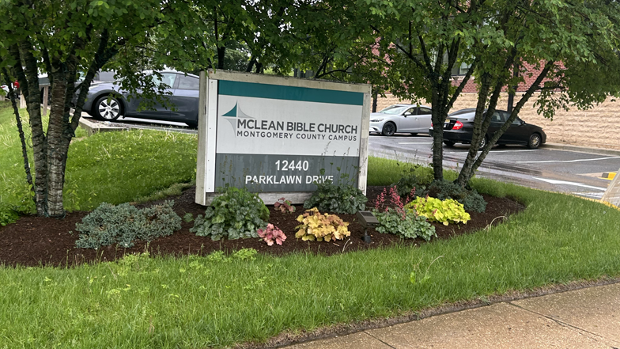

Megachurches with mega-assets: What are they and how do they impact their communities?
By Abigail Roedersheimer
For centuries, churches have served as a form of community and philanthropic outreach. In the era of the megachurch, how much revenue do the churches earn from attendees, and where does it go?
-

The sign outside of the McLean Bible Church Montgomery County location on a Sunday morning
What constitutes a megachurch?
According to the Hartford Institute for Religion Research, a megachurch is defined as a congregation with consistent attendance of more than 2,000.
However, the country’s 40 largest megachurches, largely relying on information self-reported by the churches to the Hartford Institute for Religion Research’s Megachurch Database, can have attendance numbers over 42 times the minimum.
The institute’s research is largely led by Scott Thumma and Warren Bird, of the Evangelical Council for Financial Accountability, and faculty members of the Hartford International University for Religion and Peace.
In addition to the attendance numbers, the institute also characterizes megachurches as frequently having a “charismatic, authoritative senior minister,” and “innovative and often contemporary worship formats.”
About 70% of megachurches lie in the southern Sun Belt of the United States, and about 45% are non-denominational, according to the institute’s website.
The churches typically employ more than 100 full-time staff.
Economic Impact
With high operating budgets and attendance, garnering donations is crucial for megachurches. This can mean that churches sometimes have revenue of over $100 million, and net assets over double the amount.
That’s the case for Christ’s Church of the Valley, in Peoria, Arizona. The church brought in roughly $107 million in 2023.
If the church was a typical business, it would be subject to a 1.87% sales tax rate, and a property tax rate based on its assessed value.
Without deductions or other credits, the church would pay almost $2.02 million, according to self-reported revenue.
However, because of its exemption as a religious institution, it pays $0.
According to Maria Laughner, Peoria’s economic development director, the church is in a suburban area, and therefore doesn’t draw visitors to other businesses in the area around service times.
“We haven’t seen any other kind of growth or development occur. You know, adjacent to where the church is, which leads me to believe that it’s not been generating that impact,” said Laughner.
The Hartford Institute notes that megachurches tend to be in suburban areas of “sprawl cities” - cities like Los Angeles, Dallas and Phoenix.
Laughner says that, as a resident of the area, she hasn’t noticed any impacts from volunteers associated with the church.
“If you’re not involved in the church, you’re not going to know what they’re doing,” she said.
She noted that other churches in the area offer food, shelter and opportunities for career advancements.
Christ’s Church of the Valley advertises a variety of volunteer opportunities, but the majority are internal to church operations. The church does offer free food and meals at services.
Levels of philanthropy and community service vary by each location and organization. Notably, the Crossroads Church of Cincinnati promised to give $2.5 million to nonprofit partners over 25 weeks to celebrate its 25th Anniversary in 2021.
Research
For James Wellman, a professor at the University of Washington’s School for International Studies, the concept of a megachurch was fascinating enough, it constituted years of research, that ultimately culminated in a book, High on God: How Megachurches Won a Nation.
“Our goal is not just to say, hey, these are big churches and they’re interesting, but, you know, why and how do they get that way?” said Wellman.
Wellman visited the majority of the churches he analyzes in his book, including The Rock Church in San Diego.
The church, founded by ex-NFL and now senior pastor Miles McPherson, has several locations and a weekly attendance of 18,000, according to the Hartford database.
70%
of churchgoers attend the largest
10%
of congregations
According to the 2023 Faith Communities Today survey
"Rock Church Point Loma campus" by Worldbruce is licensed under CC BY-SA 4.0.
The Point Loma location of The Rock Church. Wellman says when he visited, there was a separate building for police and firemen, which had food and clothing available.
Wellman teamed up with University of Washington graduate students Katie E. Corcoran and Kate Stockly-Meyerdirk to analyze 470 interviews and roughly 16,000 survey responses about megachurch attendees' experiences.
“The data got to be so overwhelming,” said Wellman, “that we thought, ‘we must be fooling ourselves, you know? Maybe we’re taken in by the megachurch,”
Four themes ultimately emerged: salvation/spirituality, acceptance/belonging, admiration for and guidance from the leader, and morality and purpose through service.
“I think one of the biases against megachurches is that they’re simply there for people to feel good about themselves,” said Wellman.
While Wellman acknowledged controversies that have often plagued media coverage of the churches he said that this tends to apply to a minority of locations.
“We went in with a bias towards megachurches that they are manipulative and were corrupt, but when we looked into every corrupt megachurch problem over the last 20 years, there just weren’t that many,”
Most recently, the Greater Grace Church of Baltimore made headlines when two pastors were expelled on accusations of sexual misconduct.
Wellman said his ultimate conclusion challenged his expectations.
“These are instruments of building families, building individuals and really helping communities,” Wellman said, “the data seemed to show that they were very good for human beings.”
Political Impact
In July of 2024, ProPublica journalist Andy Kroll published the story, "Inside Ziklag, the Secret Organization of Wealthy Christians Trying to Sway the Election and Change the Country."
Kroll, along with Nick Surgey from Documented, found that Ziklag had ammassed $12 million, some of which it planned to use in Arizona to mobilize voters it labeled "sympathetic to Republicans."
Kroll said that Gateway Church, which is located in Dallas, had donated to the group.
He noted that from the dated he analyzed, non-denomination churches, like Gateway, have significant influence.
"They're the ones who are bringing in a lot of money and then give some of the money to Christian right organizations," he said, "but also, you see the people who are the leaders of those megachurches also on the boards of more politiclaly active groups,"
While Wellman said that it would be difficult for a church to get too political without losing members, he said it could be more feasible in southern states.
"There's just an instict, 'I don't want to get manipulated, at least in terms of my politics'. Of course, regional variations really matter," Wellman said
However, Wellman expressed curiousity about the most recent election, and potential influence the churches may have had.
OpenSecrets reveals that its not uncommon for employees of megachurches to make donations to campaigns or parties, however, they typically don't reach past $2,000. Still, there are outlying circumstances similar to the Gateway donation, like in 2017 when Mark Keough, who at the time identified himself as a Woodlands Church pastor, donated $90,000 to his own campaign
"This non-denominational wing of American Christianity is growing so fast that you know, it's hard to see how that doesn't have larger consequences that ripple out," Kroll said.
A Brief History of the Megachurch
From early beginnings, to some of the controversies that have plagued the industry